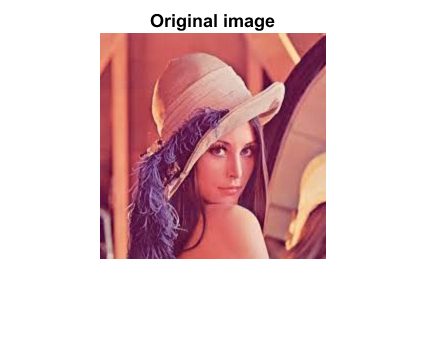
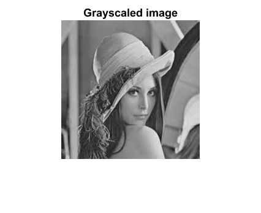
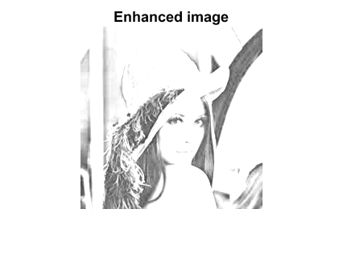

Contents
function mainPso()
MAINPSO
Program to enhance image quality based on Particle Swarm Optimization Alghoritm.
- Syntax
[] = MAINPSO()
- Examples:
Provide sample usage code here
- See also:
ENHANCEGSCLIMAGE, FITNESSFUNCTION GETIMAGESHARPNESS
- Author: Dmitrii Leliuhin
- Email: dleliuhin@mail.ru
- Date: 07/12/2018 11:04:25
- Version: 1.0 $
- Requirements: PCWIN64, MatLab R2016a
- Warning:
- Warnings list.
- TODO:
- TODO list.
Code
% Clear command window, workspace, plots. clc; clear all; close all; % Add subfolder with images. addpath(strcat(pwd,'\images'), '-end');
PSO Parameters
wmax=0.9; % Maximal inertia weight. wmin=0.4; % Minimal inertia weight. c1=2.4; % Cognitive acceleration coefficient. c2=1.7; % Social acceleration coefficient. swarmSize = 40; % Population size. localSize = 3; % Local window size. maxIterValue = 150; % Maximum number of iterations. % Uniformly distributed generated numbers within range [0,1]. r1 = rand; r2 = rand; fit_val=[]; % Vector for storing fitness values. P_best=[]; % Vector for storing pbest values. G_best=[]; % Vector for storing gbest values. pbest = 0; % Local best position of the group. gbest = 0; % Global best position of the swarm. % Reading specific image from subfolder. I = imread('lena.jpg'); % Converting original image, I, to gray scale, G. G = rgb2gray(I); % Plot images. figure; imshow(I); title('Original image', 'fontsize', 10); figure; imshow(G); title('Grayscaled image', 'fontsize', 10); % N = imnoise(G, 'salt & pepper', 0.02); % figure; % imshow(N); % title('Noised image', 'fontsize', 10); % Get image size m*n. [n, m] = size(I); 
Particle initialization
for i = 1:swarmSize % Updating optimum vales for particle position. a(i) = (1.5).*rand(1,1); % [0, 1.5] b(i) = (0.5).*rand(1,1); % [0, 0.5] c(i) = rand(1,1); % [0, 1] k(i) = 0.5 + 1.*rand(1,1); % [0.5, 1.5] % Updating particle velocity. v(i) = rand; % [0, 1] % Zeros vector of current positions of i'th particle. x(i) = 0; end
Iterating
for i = 1:maxIterValue % Calculating inertia weight. w = wmax -(wmax - wmin) * i / maxIterValue; for j = 1:swarmSize % Generating enhanced image by transformation function. E = enhanceGsclImage(G, localSize, a(j), b(j), c(j), k(j)); % Calculating fitness value. fitness = fitnessFunction(E, m, n); % Add calculated fitness value to specific vector. fit_val = [fit_val, fitness]; % Get max value in the vector of fitvalues. maxFit = max(fit_val); if (fitness < x(j)) % Calculate pbest position. pbest = x(j); % Add calculated pbest value to specific vector. P_best = [P_best, pbest]; else % Calculate pbest position. pbest = fitness; % Add calculated pbest value to specific vector. P_best = [P_best, pbest]; end end gbest = max(P_best); for j = 1:swarmSize % Updating velocity. v(j) = w*v(j) + c1.*r1.*(P_best(j) - x(j)) + c2.*r2.*(gbest - x(j)); % Updating particle position. x(j) = x(j) + v(j); end P_best = []; end % Plot enhanced image figure; imshow(E); title('Enhanced image', 'fontsize', 10);
Comparing images
fprintf('Sharpness of Original image: %5.3f \n', ... mean(getImageSharpness(I))); fprintf('Brightness of Original image: %5.3f \n', mean2(I)); fprintf('Contrast of Original image: %5.3f \n\n', max(I(:)) - min(I(:))); fprintf('Sharpness of Grayscaled image: %5.3f \n', ... getImageSharpness(G)); fprintf('Brightness of Grayscaled image: %5.3f \n', mean2(G)); fprintf('Contrast of Grayscaled image: %5.3f \n\n', max(G(:)) - min(G(:))); fprintf('Sharpness of Enhanced image: %5.3f \n', ... getImageSharpness(E)); fprintf('Brightness of Enhanced image: %5.3f \n', mean2(E)); fprintf('Contrast of Enhanced image: %5d \n\n', max(E(:)) - min(E(:)));
Sharpness of Original image: 3.098 Brightness of Original image: 127.915 Contrast of Original image: 255.000 Sharpness of Grayscaled image: 9.380 Brightness of Grayscaled image: 123.739 Contrast of Grayscaled image: 213.000 Sharpness of Enhanced image: 0.082 Brightness of Enhanced image: 1.143 Contrast of Enhanced image: 1.888147e+00
end